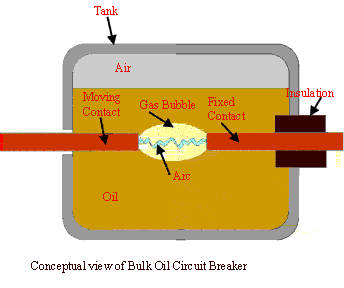
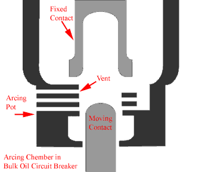
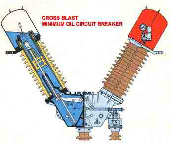
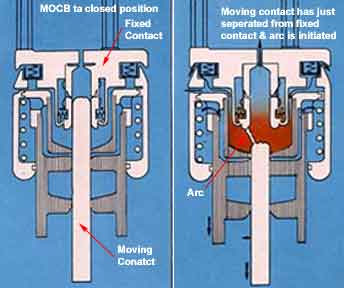
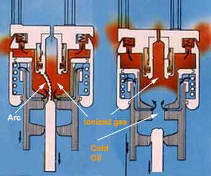
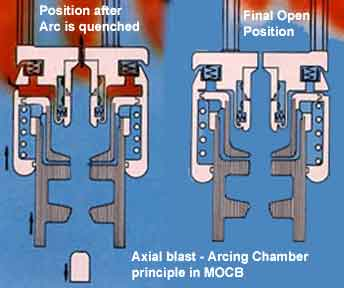
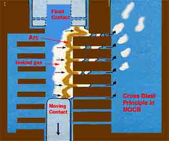

Types of Oil Circuit Breakers
Bulk Oil Circuit Breaker or BOCB
Minimum Oil Circuit Breaker or MOCB
Bulk Oil Circuit Breaker
Construction of Bulk Oil Circuit Breaker
Arc Quenching in Bulk Oil Circuit Breaker
Single Break Bulk Oil Circuit Breaker
Double Break Bulk Oil Circuit Breaker
Minimum Oil Circuit Breaker
Working Principle or Arc Quenching in Minimum Oil Circuit Breaker
Mineral oil has better insulating property than air. In oil circuit breaker the fixed contact and moving contact are immerged inside the insulating oil. Whenever there is a separation of electric current carrying contacts in the oil, the arc in circuit breaker is initialized at the moment of separation of contacts, and due to this arc the oil is vaporized and decomposed in mostly hydrogen gas and ultimately creates a hydrogen bubble around the arc. This highly compressed gas bubble around the arc prevents re-striking of the arc after electric current reaches zero crossing of the cycle. The oil circuit breaker is the one of the oldest type of circuit breakers.
Operation of Oil Circuit Breaker
The operation of oil circuit breaker is quite simple let’s have a discussion. When the electric current carrying contacts in the oil are separated an arc is established in between the separated contacts.
Actually, when separation of contacts has just started, distance between the electric current contacts is small as a result the voltage gradient between contacts becomes high. This high voltage gradient between the contacts ionized the oil and consequently initiates arcing between the contacts. This arc will produce a large amount of heat in surrounding oil and vaporizes the oil and decomposes the oil in mostly hydrogen and a small amount of methane, ethylene and acetylene. The hydrogen gas can not remain in molecular form and its is broken into its atomic form releasing lot of heat. The arc temperature may reach up to 5000° K. Due to this high temperature the gas is liberated surround the arc very rapidly and forms an excessively fast growing gas bubble around the arc. It is found that the mixture of gases occupies a volume about one thousand times that of the oil decomposed. From this figure we can assume how fast the gas bubble around the arc will grow in size. If this growing gas bubble around the arc is compressed by any means then rate of de – ionization process of ionized gaseous media in between the contacts will accelerate which rapidly increase the dielectric strength between the contacts and consequently the arc will be quenched at zero crossing of the electric current cycle. This is the basic operation of oil circuit breaker. In addition to that cooling effect of hydrogen gas surround the arc path also helps, the quick arc quenching in oil circuit breaker.
Types of Oil Circuit Breakers
There are mainly two types of oil circuit breakers available-
Bulk Oil Circuit Breaker or BOCB
Bulk oil circuit breaker or BOCB is such types of circuit breakers where oil is used as arc quenching media as well as insulating media between electric current carrying contacts and earthed parts of the breaker. The oil used here is same as transformer insulating oil.
Minimum Oil Circuit Breaker or MOCB
These types of circuit breakers utilize oil as the interrupting media. However, unlike bulk oil circuit breaker, a minimum oil circuit breaker places the interrupting unit in insulating chamber at live potential. The insulating oil is available only in interrupting chamber. The features of designing MOCB is to reduce requirement of oil, and hence these breaker are called minimum oil circuit breaker.
Bulk Oil Circuit Breaker
Construction of Bulk Oil Circuit Breaker
The basic construction of bulk oil circuit breaker is quite simple. Here all moving contacts and fixed contacts are immerged in oil inside closed iron vessel or iron tank. Whenever the electric current carrying contacts are being open within the oil the arc is produced in between the separated contacts. The large energy will be dissipated from the arc in oil which vaporizes the oil as well as decomposes it. Because of that a large gaseous pressure is developed inside the oil which tries to displace the liquid oil from surrounding of the contacts. The inner wall of the oil tank has to withstand this large pressure of the displaced oil. Thus the oil tank of bulk oil circuit breaker has to be sufficiently strong in construction. An air cushion is necessary between the oil surface and tank roof to accommodate the displaced oil when gas forms around the arc. That is why the oil tank is not totally filled up with oil it is filled up to certain level above which the air is tight in the tank. The breaker tank top cover should be securely bolted on the tank body and total breaker must be properly locked with foundation otherwise it may jump out during interruption of high fault current. In these type of equipment where expansible oil is enclosed in an air tight vessel (oil tank) there must be a gas vent fitted on the tank cover. Naturally some form of gas vent always is provided on the cover of bulk oil circuit breaker tank. This is very basic features for construction of bulk oil circuit breaker.
Arc Quenching in Bulk Oil Circuit Breaker

When the electric current carrying contacts in the oil are separated an arc is established in between the separated contacts.
This arc will produce rapidly growing gas bubble around the arc. As the moving contact move away from fixed contact the length of arc is increased as a result the resistance of the arc increases. The increased resistance causes lowering the temperature and hence reducing the formation of gasses surround the arc. The arc quenching in bulk oil circuit breaker takes place when electric current passes through zero crossing. If we go through the arc quenching phenomenon more thoroughly we will find many other factors effects the arc quenching in bulk oil circuit breaker. As the gas bubble is enclosed by the oil inside the totally air tight vessel, the oil surround it will apply high pressure on the bubble, which results highly compressed gas around the arc. As the pressure is increased the de – ionization of gas increases which helps the arc quenching. The cooling effect of hydrogen gas also helps in arc quenching in oil circuit breaker.
Single Break Bulk Oil Circuit Breaker
In single break bulk oil circuit breaker there is one pair of electric current carrying contacts for each phase of power circuit. The each pair of electric current carrying contacts in this bulk oil circuit breaker consists of one fixed contact and one moving contact. Fixed contact is stationary contact and moving contact moves away from fixed contact during opening of the circuit breaker. As the moving contact is being moved away from fixed contact the arc is produced in between the contacts and it is extinguished during zero crossing of the fault current, due to the reasons as explain in previous chapter. As the days go on further research works have been done to improve better arc control in single break bulk oil circuit breaker. The main aim of development of bulk oil circuit breaker is to increase the pressure developed by the vaporization and dissociation of oil. Since in large gas pressure, the mean free paths of electrons and ions are reduced which results in effective deionization. So if the pressure can be increased, the rate of deionization is increased which helps to quick arc extinction. It has been found that if the opening of fixed and moving contacts is done inside a semi closed insulated chamber then the gas bubble created around the arc will get less space of expansion, hence it becomes highly compressed. These semi closed insulated arcing chamber in bulk oil circuit breaker is known as side vented explosion pot or cross jet pot. The principle of operation of cross jet pot is quite simple let’s have a discussion. The pressure developed by the vaporization and dissociation of the oil is retained in the side vented explosive pot by withdrawing the moving contact through a stack of insulating plates having a minimum radial clearance around the contact. Thus there is practically no release of pressure until the moving contact uncovers one of the side vents. The compressed hydrogen gas can then escape across the arc path, thus exerting a powerful cooling action on the ionized column.

When the electric current zero is reached, the post arc resistance increased rapidly due this cooling action. At higher breaking currents larger will be the pressure generated and a bulk oil circuit breaker gives its best performance at the highest electric current within its rating. These single break bulk oil circuit breaker may have problem during clearing low currents such as load current of the breaker.
Various improvement in the design of pressure chamber or side vented explosive chamber have been suggested to overcome the problem of low electric current interruption. One solution of this is providing a supplementary oil chamber below the side vents. This supplementary oil chamber is known as compensating chamber which provides fresh source of oil to be vaporized in order to feed more clean gas back across the arc path during clearing low current.
Double Break Bulk Oil Circuit Breaker
Various improvements in the design of bulk oil circuit breaker have been suggested to satisfactory and safe arc interruption especially at currents below the rated maximum. One solution to this problem is to use an intermediate contact between tow electric current carrying contacts. The arc is here split into two parts in series. The aim here is to extinguish the second arc quickly by using the gas pressure and oil momentum due to the first arc. In double break bulk oil circuit breaker, there are two fixed contact and are bridged by one moving contact. The moving contact is fitted with driving mechanism of the oil circuit breaker by means of an insulated rod. As the moving contact bridge moves downwards the contact gaps are created with fixed contacts at both end of the intermediate moving contact bridge. Hence arcs are produced at both contacts gap.
Minimum Oil Circuit Breaker

As the volume of the oil in bulk oil circuit breaker is huge, the chances of fire hazard in bulk oil system are more. For avoiding unwanted fire hazard in the system, one important development in the design of oil circuit breaker has been introduced where use of oil in the circuit breaker is much less than that of bulk oil circuit breaker. It has been decided that the oil in the circuit breaker should be used only as arc quenching media not as an insulating media. Then the concept of minimum oil circuit breaker comes. In this type of circuit breaker the arc interrupting device is enclosed in a tank of insulating material which as a whole is at live potential of system. This chamber is called arcing chamber or interrupting pot. The gas pressure developed in the arcing chamber depends upon the electric current to be interrupted. Higher the electric current to be interrupted causes larger the gas pressure developed in side the chamber, hence better the arc quenching. But this put a limit on the design of the arc chamber for mechanical stresses. With use of better insulating materials for the arcing chambers such as glass fiber, reinforced synthetic resin etc, the minimum oil circuit breaker are able to meet easily the increased fault levels of the system.
Working Principle or Arc Quenching in Minimum Oil Circuit Breaker
Working Principle of minimum oil circuit breaker or arc quenching in minimum oil circuit breaker is described below. In a minimum oil circuit breaker, the arc drawn across the electric current carrying contacts is contained inside the arcing chamber.
Hence the hydrogen bubble formed by the vaporized oil is trapped inside the chamber. As the contacts continue to move, after its certain travel an exit vent becomes available for exhausting the trapped hydrogen gas. There are two different types of arcing chamber is available in terms of venting are provided in the arcing chambers. One is axial venting and other is radial venting. In axial venting, gases (mostly Hydrogen), produced due to vaporization of oil and decomposition of oil during arc, will sweep the arc in axial or longitudinal direction.
Let's have a look on working principle Minimum Oil Circuit Breaker with axial venting arc chamber.
|  |
The moving contact has just been separated and arc is initiated in MOCB.
|
|  |
The ionized gas around the arc sweep away through upper vent and cold oil enters into the arcing chamber through the lower vent in axial direction as soon as the moving contact tip crosses the lower vent opening and final arc quenching in minimum oil circuit breaker occurs
|
|  |
The cold oil occupies the gap between fixed contact and moving contact and the minimum oil circuit breaker finally comes into open position.
|

The axial venting generates high gas pressure and hence has high dielectric strength, so it is mainly used for interrupting low electric current at high voltage.
On the other hand radial venting produces relatively low gas pressure and hence low dielectric strength so it can be used for low voltage and high electric current interruption. Many times the combination of both is used in minimum oil circuit breaker so that the chamber is equally efficient to interrupt low electric current as well as high current. These types of circuit breaker are available up to 8000 MVA at 245 KV.
 by
by